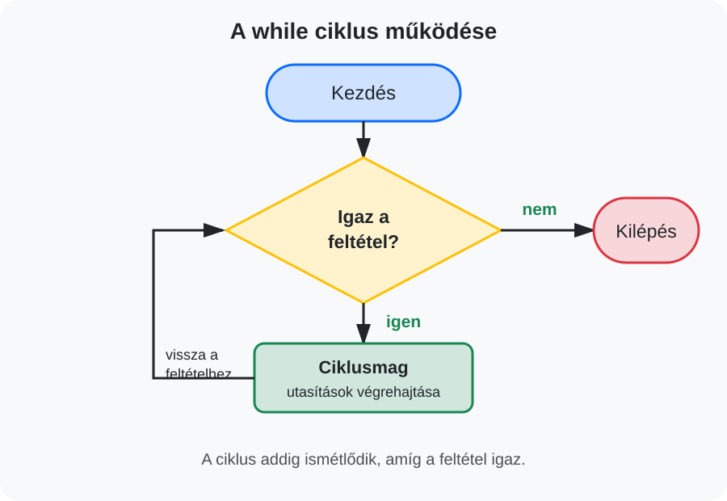

A while ciklussal addig ismételhetünk egy utasítássorozatot, amíg egy megadott feltétel igaz.
while ciklus felépítését és működését,
A ciklus egy vagy több utasítást ismételten végrehajt. A while ciklust akkor használjuk,
amikor az ismétlések számát előre nem feltétlenül ismerjük, és a folytatás egy feltételtől függ.
while feltetel:
utasitasok
while ciklus minden ismétlés előtt megvizsgálja a feltételt.Az alábbi program kiírja az 1-től 5-ig terjedő egész számokat.
szam = 1
while szam <= 5:
print(szam)
szam += 1
A szam += 1 minden körben eggyel növeli a változó értékét. Enélkül a feltétel mindig igaz maradna.
szam = 10
while szam >= 1:
print(szam)
szam -= 1
print("Start!")Végtelen ciklus keletkezik, ha a ciklus feltétele soha nem válik hamissá.
szam = 1
while szam <= 5:
print(szam)szam értéke nem változik, ezért a ciklus nem áll le. Mindig ellenőrizd, hogy a ciklusban történik-e olyan változás, amely közelebb visz a kilépéshez!
A ciklus addig kér be számot, amíg a felhasználó nem ad meg pozitív értéket.
szam = int(input("Adj meg egy pozitív egész számot: "))
while szam <= 0:
print("Hibás adat!")
szam = int(input("Adj meg egy pozitív egész számot: "))
print(f"A megadott szám: {szam}")Ezt a megoldást adatellenőrző ciklusnak is nevezhetjük.
A végjel egy különleges érték, amely nem része a feldolgozandó adatoknak, hanem az adatbevitel végét jelzi. Az alábbi példában a végjel a nulla.
szam = int(input("Adj meg egy számot, a kilépéshez 0-t: "))
while szam != 0:
print(f"A megadott szám kétszerese: {szam * 2}")
szam = int(input("Adj meg egy számot, a kilépéshez 0-t: "))
print("Az adatbevitel véget ért.")Az osszeg változóban folyamatosan gyűjtjük a megadott számok összegét.
osszeg = 0
szam = int(input("Adj meg egy számot, a kilépéshez 0-t: "))
while szam != 0:
osszeg += szam
szam = int(input("Adj meg egy számot, a kilépéshez 0-t: "))
print(f"A megadott számok összege: {osszeg}")Az átlaghoz az összeget és a feldolgozott adatok darabszámát is nyilván kell tartani.
osszeg = 0
darab = 0
szam = int(input("Adj meg egy számot, a kilépéshez 0-t: "))
while szam != 0:
osszeg += szam
darab += 1
szam = int(input("Adj meg egy számot, a kilépéshez 0-t: "))
if darab > 0:
atlag = osszeg / darab
print(f"A számok átlaga: {atlag:.2f}")
else:
print("Nem adtál meg feldolgozható számot.")Számoljuk meg, hány pozitív számot adott meg a felhasználó!
pozitiv_db = 0
szam = int(input("Adj meg egy számot, a kilépéshez 0-t: "))
while szam != 0:
if szam > 0:
pozitiv_db += 1
szam = int(input("Adj meg egy számot, a kilépéshez 0-t: "))
print(f"A pozitív számok darabszáma: {pozitiv_db}")Itt a ciklust és az elágazást együtt használjuk.
A break azonnal megszakítja a ciklus futását.
while True:
jelszo = input("Add meg a jelszót: ")
if jelszo == "python10":
print("Sikeres belépés.")
break
print("Hibás jelszó, próbáld újra!")while True önmagában végtelen ciklus. Ilyenkor gondoskodni kell egy biztosan elérhető kilépési lehetőségről.
while ciklussal!szam = 2
while szam <= 20:
print(szam)
szam += 2szam = int(input("Adj meg egy pozitív egész számot: "))
while szam < 0:
szam = int(input("Pozitív számot adj meg: "))
while szam >= 0:
print(szam)
szam -= 1szam = int(input("Adj meg egy 1 és 10 közötti számot: "))
while szam < 1 or szam > 10:
print("Hibás érték!")
szam = int(input("Adj meg egy 1 és 10 közötti számot: "))
print("Helyes adat.")osszeg = 0
darab = 0
szam = int(input("Szám, kilépéshez 0: "))
while szam != 0:
osszeg += szam
darab += 1
szam = int(input("Szám, kilépéshez 0: "))
print(f"Összeg: {osszeg}")
print(f"Darabszám: {darab}")paros_db = 0
paratlan_db = 0
szam = int(input("Szám, kilépéshez 0: "))
while szam != 0:
if szam % 2 == 0:
paros_db += 1
else:
paratlan_db += 1
szam = int(input("Szám, kilépéshez 0: "))
print(f"Páros számok: {paros_db}")
print(f"Páratlan számok: {paratlan_db}")helyes_pin = "1234"
probalkozas = 0
sikeres = False
while probalkozas < 3 and not sikeres:
pin = input("Add meg a PIN-kódot: ")
probalkozas += 1
if pin == helyes_pin:
sikeres = True
else:
print("Hibás PIN-kód.")
if sikeres:
print("Sikeres belépés.")
else:
print("A belépés letiltva.")